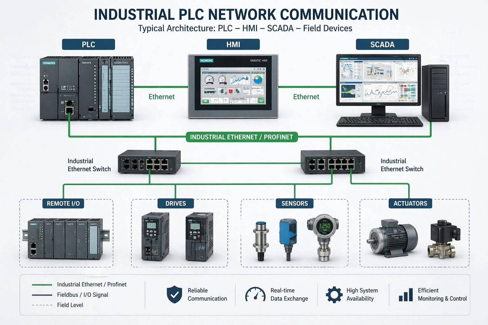

Driver de Comunicação e Redes Industriais
Redes Industriais
O que é uma rede industrial?
Uma rede industrial é o meio pelo qual os equipamentos de automação trocam dados entre si: sensores, CLPs, drives, IHMs, sistemas supervisórios e, nos níveis mais altos da Pirâmide de Automação, os sistemas de gestão. Diferente de uma rede de escritório, ela precisa ser robusta contra ruído e responder em tempos previsíveis.
Na maioria das redes, a comunicação segue o modelo de pergunta e resposta: um equipamento pede o dado (mestre ou cliente) e outro responde (escravo ou servidor). É assim que o supervisório lê e escreve variáveis dentro do CLP.

Fonte: bxlyplcPrincipais redes e protocolos
| Protocolo / Rede | Meio físico | Característica |
|---|---|---|
| Ethernet Industrial / PROFINET | Cabo Ethernet (RJ-45) | Comunicação por rede Ethernet em ambiente industrial; o PROFINET é a tecnologia Siemens baseada em Ethernet. |
| ISO sobre TCP (S7-TCP/IP) | Ethernet (TCP/IP) | Permite acessar CLPs Siemens diretamente pela porta Ethernet da CPU. É o usado na bancada. |
| Modbus TCP | Ethernet (TCP/IP) | Protocolo industrial aberto e muito difundido. |
| Modbus RTU | Serial (RS-232 / RS-485) | Protocolo frequentemente usado em comunicação serial. |
| PPI e MPI | Serial | Protocolos Siemens mais antigos: PPI para a linha S7-200 e MPI para S7-300 e S7-400. |
| OPC UA e MQTT | Ethernet (TCP/IP) | Padrões de troca de dados voltados à integração com sistemas de TI, nuvem e MES/ERP (Indústria 4.0). |
Driver de Comunicação
O que é e como funciona
O driver é o "tradutor" entre o sistema supervisório e o equipamento de campo. O supervisório não conhece o protocolo de cada fabricante; quem conhece é o driver. Ele monta os pedidos de leitura e escrita, envia pela rede e entrega as respostas ao supervisório.
Caminho dos dados: Supervisório (Elipse E3) → Driver de comunicação → Rede Ethernet → CLP
Tag
Variável do supervisório ligada a um endereço dentro do CLP. Ler ou escrever na tag é ler ou escrever naquele endereço.
Varredura (Scan)
Intervalo, em milissegundos, com que o driver atualiza cada tag. Quanto menor, mais rápida a atualização e maior o tráfego na rede.
Leitura e escrita
Cada tag pode ser configurada para apenas ler o valor do CLP (monitorar) ou também escrever nele (enviar comandos).
O Driver Siemens MProt
Visão geral
O MProt é o driver da Elipse Software que se comunica com CLPs Siemens (S7-200, S7-300, S7-400 e S7-1200) e VIPA Speed7. O nome "M-Prot" vem de "multiprotocolo": um único driver atende vários protocolos Siemens.
- Arquivo: MProt.dll
- Protocolos: PPI e MPI (serial), MPI encapsulado em Ethernet e ISO sobre TCP.
- Dependência: biblioteca IOKit versão 2.0 ou superior.
- Versão da documentação consultada: 4.0.38 (27/04/2026).
| Protocolo | Equipamento | Como conecta |
|---|---|---|
| PPI | S7-200 | Cabo conversor RS232-PPI/MPI. |
| MPI | S7-300 e S7-400 | Cabo conversor RS232-PPI/MPI. |
| ISO/TCP (ISOTCP) | S7-300 e S7-400 (com cartão Ethernet CP) e S7-1200 | Pela rede Ethernet; no S7-1200, diretamente na porta Ethernet da CPU. |
Configurando o Driver para o S7-1200
Janela de configuração do driver
No Elipse E3 (versão 2.0 ou superior), a janela é aberta pelo botão Configurar o driver, na barra de ferramentas do driver. Para o S7-1200, as configurações são:
Aba MProt
- Network: selecionar ISOTCP.
- Use default TSAPs: desmarcar.
- Source TSAP (hex): 0100.
- Connection type: PG.
- Rack: 0.
- Slot: 1.
Aba Setup
- Physical Layer: Ethernet.
- Timeout: tempo máximo de espera da camada física (a tela vem com 1000 ms).
- Connection management: modo automático, com nova tentativa de conexão a cada alguns segundos caso a conexão falhe.
Aba Ethernet
- Transport: TCP/IP.
- Main IP: endereço IP do CLP da bancada (10.78.49.20).
- Port: 102, que é a porta padrão do ISO sobre TCP (a tela vem com 502, que é a porta do Modbus TCP).
Regra para ISOTCP: em todas as tags, o parâmetro N1 (endereço do equipamento) e o Default Slave Address devem ficar em 0.
Lado do CLP: além do driver, a CPU precisa permitir esse acesso externo. No S7-1200, isso exige habilitar a opção Permit access with PUT/GET nas propriedades da CPU e usar blocos de dados com acesso padrão (não otimizado), para que cada variável tenha um endereço (offset) fixo. Esse requisito é do S7-1200, não consta na documentação do MProt.
Configurando as tags (N1 a N4)
Cada tag é endereçada por quatro parâmetros numéricos:
| Parâmetro | Significado |
|---|---|
| N1 | Endereço do equipamento (0 em ISOTCP). |
| N2 | Tipo de dado e área de dados, pela fórmula N2 = Tipo × 100 + Área. |
| N3 | Número do bloco de dados (DB), quando a área é DB. Caso contrário, 0. |
| N4 | Endereço (offset) dentro da área ou do DB. |
Códigos de tipo de dado (os mais usados)
- 1: BOOL
- 2: BYTE (8 bits sem sinal)
- 3: WORD (16 bits sem sinal)
- 4: INT (16 bits com sinal)
- 5: DWORD (32 bits sem sinal)
- 6: DINT (32 bits com sinal)
- 7: REAL (32 bits, ponto flutuante)
- 8: STRING
Códigos de área de dados
- 6: I (entradas digitais)
- 7: Q (saídas digitais)
- 8: M (memória)
- 9: V (bloco de dados, DB)
As tags também podem ser configuradas pelo campo Item, em forma de texto, no formato [Dispositivo:]DB<número>:<Tipo><Endereço>. Exemplo: DB1:DW20 lê uma Word a partir do endereço 20 do DB1. Para strings: DB<número>:DBS<Endereço>[tamanho].
O Driver na Bancada Processo
Arquitetura da comunicação
Na bancada, o supervisório Elipse E3 (com as telas TelaInicial, TelaMenu, TelaProcesso e TelaHistorico) se comunica com o CLP Siemens S7-1200 (CPU 1215C DC/DC/DC, projeto "processo" no TIA Portal) pela rede Ethernet da bancada, usando o driver MProt em modo ISOTCP. Na Pirâmide de Automação, essa é a ligação entre o Nível 3 (supervisão) e o Nível 2 (controle).
Caminho dos dados: Telas do Elipse E3 → Driver MProt (ISOTCP) → Ethernet (switch de 5 portas) → CLP S7-1200 → bloco de dados DB6
Toda a troca é feita por um único bloco de dados do CLP, o DB6 "Supervisório", que fica na pasta de comunicação do programa. O CLP escreve nele o estado do processo e o supervisório lê esses valores; também pode escrever nele para enviar comandos.
Endereçamento da rede da bancada
Para dois equipamentos conversarem em uma rede Ethernet, cada um precisa de um endereço IP, que o localiza na rede, e possui um endereço MAC, um identificador gravado de fábrica na placa de rede. Na bancada, todos os equipamentos com rede ficam na mesma faixa de endereços, 10.78.49.x:
| Equipamento | Endereço IP | Endereço MAC |
|---|---|---|
| CLP | 10.78.49.20 | 4C-E7-05-12-27-44 |
| IHM | 10.78.49.21 | 8C-F3-19-EF-D7-D8 |
| drv_eixo_x | 10.78.49.22 | 00-23-C6-44-65-35 |
| drv_eixo_y | 10.78.49.23 | 00-23-C6-44-65-38 |
O driver MProt se conecta ao CLP, por isso o IP 10.78.49.20 é o valor do campo Main IP na aba Ethernet. A IHM e os drives dos atuadores também ficam na rede: a IHM troca dados com o CLP, e os drives (drv_eixo_x e drv_eixo_y) recebem os comandos de movimento dos eixos X e Y. Não confunda: os drives são equipamentos físicos que controlam os atuadores elétricos, e o driver de comunicação é o software do supervisório.
Lado do CLP: o DB6 no TIA Portal
No programa do CLP, o DB6 "Supervisório" é criado com acesso padrão, de modo que cada variável tem um endereço (offset) fixo dentro do bloco. É esse endereço que o driver usa para ler e escrever. O bloco guarda:
- xBancadaHabilitada: variável booleana que indica se a bancada está habilitada (valor inicial verdadeiro).
- Entradas e Saidas: estruturas com as entradas e saídas digitais do processo.
- PosicaoAtuadorEixoX e PosicaoAtuadorEixoY: posição dos atuadores elétricos, em Real.
- StatusEstacao: texto (String de 14 caracteres) com o status da estação.
- OPatual: valor inteiro com a OP atual.
Lado do supervisório: as tags do driver
Cada variável do DB6 tem uma tag correspondente no objeto DriverProcesso do Elipse. Todas usam varredura de 1000 ms (1 segundo), com leitura e escrita habilitadas e sem escala.
| Variável no DB6 | Tipo no CLP | Offset | Tag no Elipse | N2 | N3 | N4 |
|---|---|---|---|---|---|---|
| xBancadaHabilitada | Bool | 0.0 | xBancadaHabilitada | 209 | 6 | 0 |
| Entradas | Struct | 2.0 | EntradasDigitais | 209 | 6 | 2 |
| Saidas | Struct | 4.0 | SaidasDigitais | 209 | 6 | 4 |
| PosicaoAtuadorEixoX | Real | 6.0 | PosicaoAtuadorEixoX | 709 | 6 | 6 |
| PosicaoAtuadorEixoY | Real | 10.0 | PosicaoAtuadorEixoY | 709 | 6 | 10 |
| StatusEstacao | String[14] | 14.0 | StatusEstacao | Item: 1:DB6:DBS14[14] |
||
| OPatual | Int | 30.0 | OPatual | 409 | 6 | 30 |
Na tabela, N1 é 0 em todas as tags, como exige o ISOTCP. A tag StatusEstacao usa o formato de texto no campo Item em vez dos parâmetros numéricos, porque é uma string.
Como ler a configuração: exemplo
Tag EntradasDigitais: N1 = 0, N2 = 209, N3 = 6, N4 = 2
- N2 = 209: 2 × 100 + 9, ou seja, tipo BYTE (2) na área DB (9).
- N3 = 6: o bloco de dados é o DB6.
- N4 = 2: começa no offset 2, onde está a estrutura Entradas no DB6.
Tag PosicaoAtuadorEixoX: N1 = 0, N2 = 709, N3 = 6, N4 = 6
- N2 = 709: 7 × 100 + 9, ou seja, tipo REAL (7) na área DB (9).
- N3 = 6: DB6.
- N4 = 6: offset 6, onde está a posição do eixo X.
Repare que a string StatusEstacao ocupa 16 bytes no CLP (14 caracteres mais 2 bytes de controle do S7). Por isso a variável seguinte, OPatual, começa no offset 30.